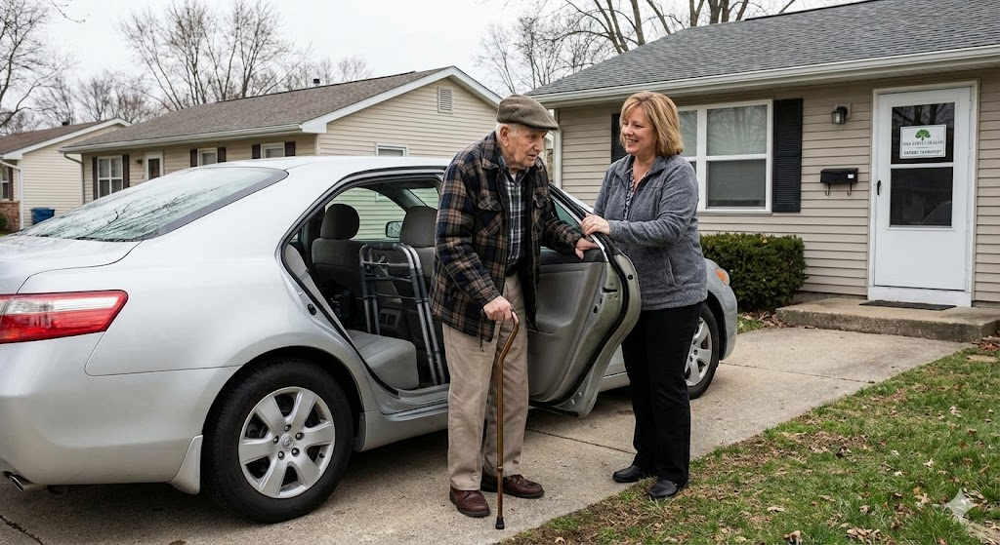
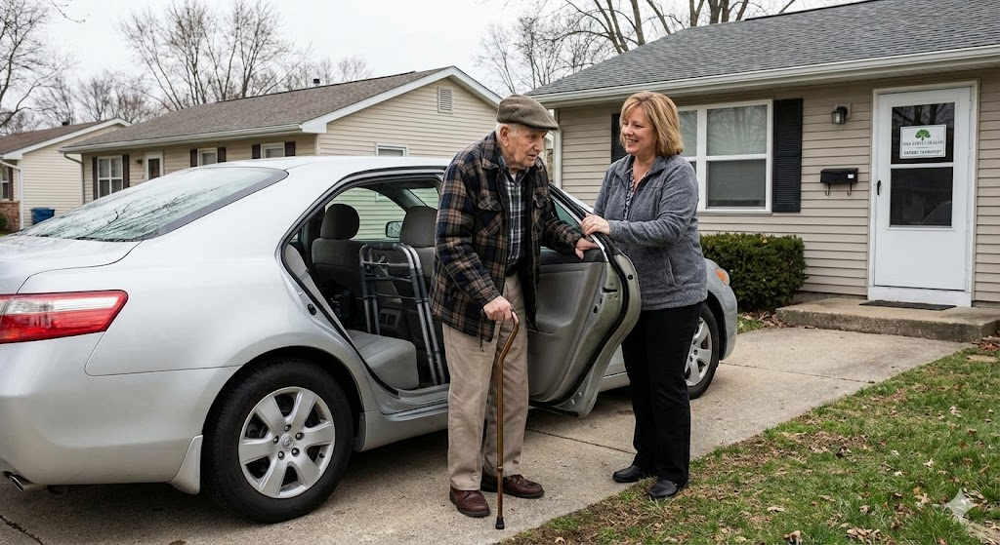

Care Mobility
Getting you there every day
caremobility247@gmail.com
Care Mobility provides consistent, dependable rides for seniors and patients with ongoing medical appointments — built specifically for care that repeats week after week.
With predictable pickup times, familiar drivers, and a patient-first approach, Care Mobility removes uncertainty from recurring care.
Transportation you can count on — every appointment, every week.

Multiple weekly treatments depend on precise timing. Care Mobility ensures dependable pickups so patients arrive consistently, on schedule, and without stress.
Ongoing treatments often take place at the same center over extended periods. Care Mobility provides familiar, reliable transportation that supports continuity of care.
Physical, occupational, and specialty therapies require repeat visits week after week. Care Mobility helps patients stay consistent with their recovery plan.
Radiation treatments follow tightly scheduled daily windows. Care Mobility helps prevent missed or delayed appointments that could disrupt care.
Outpatient programs rely on structure and routine to be effective. Care Mobility provides consistent transportation that supports accountability and continuity.
Recovery often requires repeat visits to the same facility while mobility is limited. Care Mobility offers predictable rides that support healing and independence.

 

Care Mobility was created to meet a real need in healthcare: dependable medical transportation for seniors who want to stay independent — without placing extra burden on family or loved ones.
Too often, existing options create tradeoffs. Seniors face unreliable pickups, families scramble to adjust schedules, and stress builds around making sure care isn’t missed.
We prioritize quality of service first: predictable pickup times, familiar drivers, calm assistance, and consistent routines that work week after week.
By operating independently and using modern routing and scheduling technology, Care Mobility delivers reliable service at a fair, transparent price that’s often faster and simpler than traditional alternatives.
Care Mobility isn’t just about rides. It’s about independence, reliability, and making recurring medical care easier for everyone involved.
Care Mobility is a private-pay service and does not bill Medicare, Medicaid, or insurance. This allows us to avoid approvals, paperwork, and delays that often interfere with recurring medical care and a compelling price to you.
Because getting to care on time cannot be compromised. For recurring treatments like dialysis, radiation, or therapy, missed or delayed rides can disrupt care plans, increase health risks, and create unnecessary stress.
Care Mobility is designed to prioritize consistency and reliability over administrative processing, which reduces our costs and improves your experience.
Insurance-based transportation often appears cheaper, but the real cost shows up in delays, missed pickups, rescheduling, and time lost. Many families end up paying with frustration.
Care Mobility uses advanced routing, scheduling, and customer experience technology to operate efficiently. By eliminating insurance processing and administrative overhead, we keep pricing transparent and predictable while delivering reliable service.
Care Mobility is most often chosen by seniors, adult children, and caregivers who value reliability and consistency for recurring medical care and cannot risk missed or delayed appointments.
“Reliable transportation is critical to the care we provide. Care Mobility has been a trusted partner for our clients who need recurring medical appointments. Their consistency, predictable scheduling, and familiar drivers make a real difference for both patients and caregivers.” — Director, Home-Based Care Services
“Care Mobility allows our care teams to focus on the patient — not whether transportation will show up. That reliability is invaluable in home-based care.” — Operations Manager, Major Dialysis Center